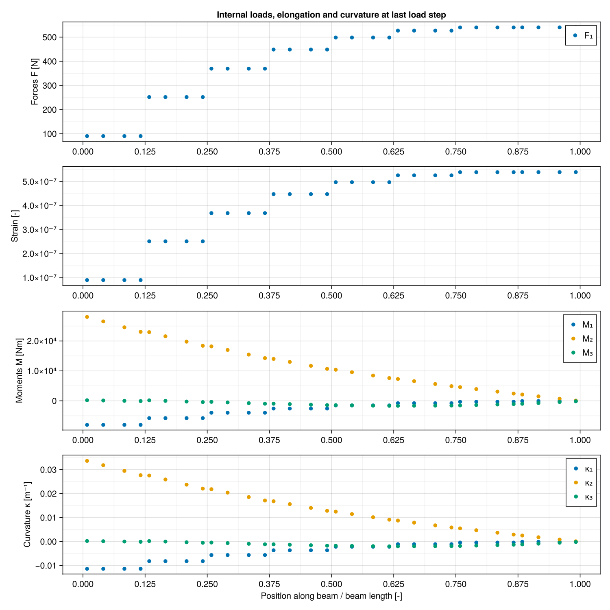

Static analysis of a beam
Cantilever bend, with out-of-plane load leading to a three-dimensional response mobilizing axial force, bending moment and torque. Comparison to solutions by Longva (2015) and Crisfield (1990)
using Muscade, StaticArrays, GLMakie
include("BeamElement.jl");
R = 100.0; # Radius of the bend [m]
EI₂ = 833.33e3; # Bending stiffness [Nm²]
EI₃ = 833.33e3; # Bending stiffness [Nm²]
EA = 1e9; # Axial stiffness [N]
GJ = 705e3; # Torsional stiffness [Nm²]Create the model
nel = 8
nnodes = nel+1
nodeCoord = hcat( 0 .+ R*cos.(3π/2 .+ ((1:nnodes).-1)/(nnodes-1)*π/4),
0 .+ zeros(Float64,nnodes,1),
R .+ R*sin.(3π/2 .+ ((1:nnodes).-1)/(nnodes-1)*π/4))
mat = BeamCrossSection(EA=EA,EI₂=EI₂,EI₃=EI₃,GJ=GJ,μ=1.,ι₁=1.)
model = Model(:TestModel)
nodid = addnode!(model,nodeCoord)
mesh = hcat(nodid[1:nnodes-1],nodid[2:nnodes])
eleid = addelement!(model,EulerBeam3D,mesh;mat=mat,orient2=SVector(0.,1.,0.))
[addelement!(model,Hold,[nodid[1]] ;field) for field∈[:t1,:t2,:t3,:r1,:r2,:r3]]; # Clamp at one endDefine the loading procedure. First 300 N then 450 and 600 N
function load(t)
t<=1. ? load=t*300. :
t>1. && t<=2. ? load=300. +(t-1)*150. :
load=450. +(t-2)*150.
end
addelement!(model,DofLoad,[nodid[nnodes]];field=:t2,value=t->load(t)); # Force along axis2 at otherRun the static analysis
initialstate = initialize!(model);
loadSteps = [0.,1.,2.,3.];
nLoadSteps = length(loadSteps)
state = solve(SweepX{0};initialstate,time=loadSteps,verbose=true,maxΔx=1e-9);
Muscade: SweepX{0} solver
step 1 converged in 1 iterations. |Δx|=5.0e-15 |Lλ|=7.7e-07
step 2 converged in 11 iterations. |Δx|=2.3e-12 |Lλ|=7.1e-07
step 3 converged in 8 iterations. |Δx|=2.4e-11 |Lλ|=1.6e-06
step 4 converged in 8 iterations. |Δx|=1.4e-11 |Lλ|=1.4e-06
nel=15, ndof=60, nstep=4, niter=28, niter/nstep= 7.00
SweepX{0} time: 5016 [ms]
Muscade done.Fetch and show beam profile for all load cases
x_ = [getdof(state[idxLoad];field=:t1,nodID=nodid[1:nnodes]) for idxLoad ∈ 1:nLoadSteps]
y_ = [getdof(state[idxLoad];field=:t2,nodID=nodid[1:nnodes]) for idxLoad ∈ 1:nLoadSteps]
z_ = [getdof(state[idxLoad];field=:t3,nodID=nodid[1:nnodes]) for idxLoad ∈ 1:nLoadSteps]
fig = Figure(size = (1000,1000))
ax = Axis3(fig[1,1],xlabel="x [m]", ylabel="y [m]", zlabel="z [m]",aspect=:equal)
for idxLoad ∈ 1:nLoadSteps
lines!(ax,nodeCoord[:,1]+x_[idxLoad][:], nodeCoord[:,2]+y_[idxLoad][:] , nodeCoord[:,3]+z_[idxLoad][:] , label="F="*string(load(loadSteps[idxLoad]))*" N");
end
xlims!(ax, 0,70); ylims!(ax, 0,60); zlims!(ax, 0,40); axislegend()
currentDir = @__DIR__
if occursin("build", currentDir)
save(normpath(joinpath(currentDir,"..","src","assets","StaticBeamAnalysis1.png")),fig)
elseif occursin("examples", currentDir)
save(normpath(joinpath(currentDir,"StaticBeamAnalysis1.png")),fig)
endFetch and display results at the Gauss points for the last load case
idxLoad = 4;Location of the 4 Gauss points
xgp1 = (1. /nel)*( (0.5-1/2*sqrt(3/7+2/7*sqrt(6/5))) :1:nel)
xgp2 = (1. /nel)*( (0.5-1/2*sqrt(3/7-2/7*sqrt(6/5))) :1:nel)
xgp3 = (1. /nel)*( (0.5+1/2*sqrt(3/7-2/7*sqrt(6/5))) :1:nel)
xgp4 = (1. /nel)*( (0.5+1/2*sqrt(3/7+2/7*sqrt(6/5))) :1:nel)
xgps = [xgp1;xgp2;xgp3;xgp4];Axial force
req = @request gp(resultants(fᵢ))
out = getresult(state[idxLoad],req,eleid)
Fgp1_ = [ out[idxEl].gp[1][:resultants][:fᵢ] for idxEl ∈ 1:nel]
Fgp2_ = [ out[idxEl].gp[2][:resultants][:fᵢ] for idxEl ∈ 1:nel]
Fgp3_ = [ out[idxEl].gp[3][:resultants][:fᵢ] for idxEl ∈ 1:nel]
Fgp4_ = [ out[idxEl].gp[4][:resultants][:fᵢ] for idxEl ∈ 1:nel];Bending moments
req = @request gp(resultants(mᵢ))
out = getresult(state[idxLoad],req,eleid)
Mgp1_ = [ out[idxEl].gp[1][:resultants][:mᵢ] for idxEl ∈ 1:nel]
Mgp2_ = [ out[idxEl].gp[2][:resultants][:mᵢ] for idxEl ∈ 1:nel]
Mgp3_ = [ out[idxEl].gp[3][:resultants][:mᵢ] for idxEl ∈ 1:nel]
Mgp4_ = [ out[idxEl].gp[4][:resultants][:mᵢ] for idxEl ∈ 1:nel];Strains
req = @request ε
out = getresult(state[idxLoad],req,eleid)
εgp1_ = [ out[idxEl].ε[1] for idxEl ∈ 1:nel]
εgp2_ = [ out[idxEl].ε[1] for idxEl ∈ 1:nel];
εgp3_ = [ out[idxEl].ε[1] for idxEl ∈ 1:nel];
εgp4_ = [ out[idxEl].ε[1] for idxEl ∈ 1:nel];Curvatures
req = @request gp(κgp)
out = getresult(state[idxLoad],req,eleid)
κgp1_ = [ out[idxEl].gp[1].κgp[1] for idxEl ∈ 1:nel]
κgp2_ = [ out[idxEl].gp[2].κgp[1] for idxEl ∈ 1:nel]
κgp3_ = [ out[idxEl].gp[3].κgp[1] for idxEl ∈ 1:nel]
κgp4_ = [ out[idxEl].gp[4].κgp[1] for idxEl ∈ 1:nel];Plot strains, etc. at Gauss points
fig = Figure(size = (1000,1000))
ax=Axis(fig[1,1], ylabel="Forces F [N]", yminorgridvisible = true,xminorgridvisible = true,xticks = (0:1. /nel:1))
scatter!(ax,xgps, [[Fgp1_[iel][1] for iel=1:nel] ; [Fgp2_[iel][1] for iel=1:nel] ; [Fgp3_[iel][1] for iel=1:nel] ; [Fgp4_[iel][1] for iel=1:nel]], label="F₁");
ax.title = "Internal loads, elongation and curvature at last load step"
axislegend();
ax=Axis(fig[2,1], ylabel="Strain [-]", yminorgridvisible = true,xminorgridvisible = true,xticks = (0:1. /nel:1))
scatter!(ax,xgps, [[εgp1_[iel][1] for iel=1:nel] ; [εgp2_[iel][1] for iel=1:nel] ; [εgp3_[iel][1] for iel=1:nel] ; [εgp4_[iel][1] for iel=1:nel]], label="ε");
ax=Axis(fig[3,1], ylabel="Moments M [Nm]", yminorgridvisible = true,xminorgridvisible = true,xticks = (0:1. /nel:1))
scatter!(ax,xgps, [[Mgp1_[iel][1] for iel=1:nel] ; [Mgp2_[iel][1] for iel=1:nel] ; [Mgp3_[iel][1] for iel=1:nel] ; [Mgp4_[iel][1] for iel=1:nel]], label="M₁");
scatter!(ax,xgps, [[Mgp1_[iel][2] for iel=1:nel] ; [Mgp2_[iel][2] for iel=1:nel] ; [Mgp3_[iel][2] for iel=1:nel] ; [Mgp4_[iel][2] for iel=1:nel]], label="M₂");
scatter!(ax,xgps, [[Mgp1_[iel][3] for iel=1:nel] ; [Mgp2_[iel][3] for iel=1:nel] ; [Mgp3_[iel][3] for iel=1:nel] ; [Mgp4_[iel][3] for iel=1:nel]], label="M₃");
axislegend()
ax=Axis(fig[4,1], ylabel="Curvature κ [m⁻¹]", yminorgridvisible = true,xminorgridvisible = true,xticks = (0:1. /nel:1),xlabel="Position along beam / beam length [-]")
scatter!(ax,xgps, [[κgp1_[iel][1] for iel=1:nel] ; [κgp2_[iel][1] for iel=1:nel] ; [κgp3_[iel][1] for iel=1:nel] ; [κgp4_[iel][1] for iel=1:nel]], label="κ₁");
scatter!(ax,xgps, [[κgp1_[iel][2] for iel=1:nel] ; [κgp2_[iel][2] for iel=1:nel] ; [κgp3_[iel][2] for iel=1:nel] ; [κgp4_[iel][2] for iel=1:nel]], label="κ₂");
scatter!(ax,xgps, [[κgp1_[iel][3] for iel=1:nel] ; [κgp2_[iel][3] for iel=1:nel] ; [κgp3_[iel][3] for iel=1:nel] ; [κgp4_[iel][3] for iel=1:nel]], label="κ₃");
axislegend()
if occursin("build", currentDir)
save(normpath(joinpath(currentDir,"..","src","assets","StaticBeamAnalysis2.png")),fig)
elseif occursin("examples", currentDir)
save(normpath(joinpath(currentDir,"StaticBeamAnalysis2.png")),fig)
end
Show comparison with solutions by Longva (2015) and Crisfield (1990)
# Load 300 N 450 N 600 N
# x,y,z x,y,z x,y,z
# Disp Longva 58.56, 40.47, 22.18 51.99, 48.72, 18.45 46.91, 53.64, 15.65
# Disp Crisfield 58.53, 40.53, 22.16 51.93, 48.79, 18.43 46.84, 53.71, 15.61
height = [ nodeCoord[end,1]+x_[2][end], 58.56, 58.53, nodeCoord[end,1]+x_[3][end], 51.99, 51.93, nodeCoord[end,1]+x_[4][end], 46.91, 46.84,
nodeCoord[end,2]+y_[2][end], 40.47, 40.53, nodeCoord[end,2]+y_[3][end], 48.72, 48.79, nodeCoord[end,2]+y_[4][end], 53.64, 53.71,
nodeCoord[end,3]+z_[2][end], 22.18, 22.16, nodeCoord[end,3]+z_[3][end], 18.45, 18.43, nodeCoord[end,3]+z_[4][end], 15.65, 15.61]
colors = [:red, :blue, :green]
tbl = (cat = [1, 1, 1, 2, 2, 2, 3, 3, 3, 4, 4, 4, 5, 5, 5, 6, 6, 6, 7, 7, 7, 8, 8, 8, 9, 9, 9],height,
grp = [1, 2, 3, 1, 2, 3, 1, 2, 3, 1, 2, 3, 1, 2, 3, 1, 2, 3, 1, 2, 3, 1, 2, 3, 1, 2, 3])
fig = Figure(size = (2000, 400))
ax = Axis(fig[1,1], xticks = (1:9, ["x @ 300 N", "x @ 450 N", "x @ 600 N", "y @ 300 N", "y @ 450 N", "y @ 600 N", "z @ 300 N", "z @ 450 N", "z @ 600 N"]),
ylabel = "End node coordinate [m]")
barplot!(ax, tbl.cat, tbl.height,
dodge = tbl.grp,
color = colors[tbl.grp],
bar_labels = :y
)
ylims!(ax, 0,70);
labels = ["Muscade", "Longva (2015)", "Crisfield (1990)"]
elements = [PolyElement(polycolor = colors[i]) for i in 1:length(labels)]
title = "Method"
Legend(fig[1,2], elements, labels, title)
if occursin("build", currentDir)
save(normpath(joinpath(currentDir,"..","src","assets","StaticBeamAnalysis3.png")),fig)
elseif occursin("examples", currentDir)
save(normpath(joinpath(currentDir,"StaticBeamAnalysis3.png")),fig)
endThis page was generated using Literate.jl.